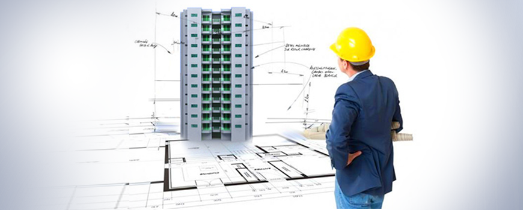
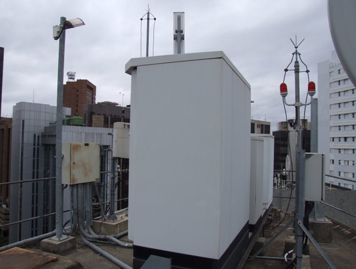
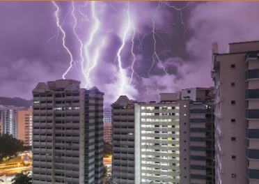

Projeto SPDA
Projetar um sistema de proteção contra descargas atmosféricas (SPDA) é fundamental para garantir a segurança de pessoas e edificações. Um projeto adequado deve levar em conta as características da edificação, como altura, tipo de estrutura e materiais utilizados, além das condições climáticas da região.

Estrutura SPDA
O SPDA é um sistema de proteção indispensável em prédios e outras edificações, pois tem como função proteger as pessoas e as estruturas contra os efeitos das descargas atmosféricas (raios). Sem um sistema de proteção adequado, uma descarga atmosférica pode causar danos irreparáveis, como incêndios, explosões, danos estruturais e até mesmo perda de vidas humanas.

Segurança do SPDA
Em resumo, o SPDA é fundamental para garantir a segurança e a integridade das pessoas e das edificações em caso de tempestades com raios, reduzindo os riscos de acidentes e prejuízos materiais. Por isso, é importante que o sistema seja projetado, instalado e mantido por profissionais especializados e habilitados, a fim de garantir a eficácia e a confiabilidade da proteção oferecida.